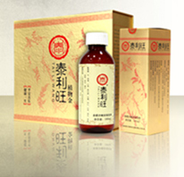

Herbs
Clarity Acupuncture and Herbs is based out of the most established herbal pharmacy in Seattle, Kue Hing Co. Working with Vincent Chiu, Master Herbalist, herbal formulas are prescribed and assembled according to the needs of each individual. We provide loose herbs, major patent formulas, as well as Tai Li Wang prepared formula.
Tai Li Wang:
Passed on in secrecy for thousands of years, Tai Li Wang is a traditional Chinese herbal formula created during the Warring States Period (475-221 B.C.) This formula was originally intended to be passed along the empirical lineage but was chosen to be omitted from the mass printed editions of the famous Chinese medical text, the Huang Di Nei Jing. The ingredients and ratios of this formula were not formally released to the public until the year 1857. Since then, Tai Li Wang has been received by the general public with great success by resolving many mysterious and idiopathic diseases. In 1992, this formula received approval from the Department of Heath of China to distribute Tai Li Wang as a health tonic for mass consumption.
Currently, Kue Hing is the only distributer of this formula in the United States. Tai Li Wang promotes health and longevity by addressing the root of disease through the ancient wisdom of Traditional Chinese Medicine with the modern standards of organic food production.
Benefits of Tai Li Wang
Detoxification:
Many toxins are produced during metabolism. If accumulated and not excreted accordingly, it will cause toxic reactions affecting your health. Tai Li Wang works by excreting your body's toxins from the blood level – decreasing blood viscosity and blood lipids, softening blood vessels, and improving circulation.
Maintaining Cell Nutrition:
Tai Li Wang contains dozens of essential nutrients that are important for healthy cell growth and maintenance. We include herbs that are rich in germanium, magnesium, strontium, lithium, and other essential trace elements to boost your body's immune system, regulate your endocrine system, and elongate your cell life for an anti-aging effect.
Restore Cell Function:
When cells are malnourished or have sustained impact from toxins, cell structure becomes compromised and consequently less effective in their performance: compromising vitality, regenerative function and efficiency. With Tai Li Wang's distinct herbal formula, your cells can be restored to its healthiest state.
Balance Hormones and Endocrine System:
As Tai Li Wang helps you to detoxify and achieve peak levels of nutrition and cell function, your body will gradually have healthier hormone equilibrium, allowing balance of mood, metabolism and alleviation of body discomforts.